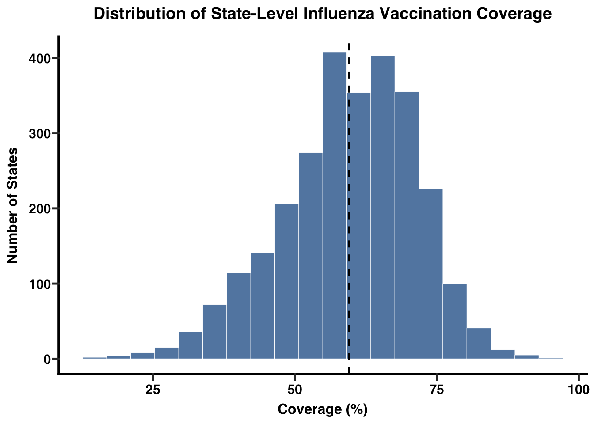
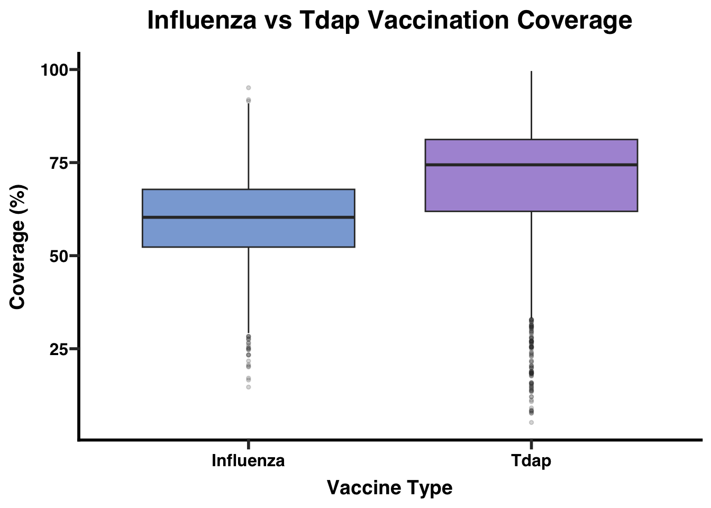

Code
library(tidyverse)
library(knitr)
library(dplyr)
library(ggprism)
library(sf)📌 Data preparation
The dataset used in this project was obtained from the CDC Pregnancy Vaccination Surveillance System, which provides estimates of maternal vaccination coverage in the United States. The data were downloaded as a CSV file and imported into R for cleaning and analysis.
To prepare the dataset, variable names were standardized to lowercase and formatted for clarity (e.g., Survey Year/Influenza Season → year). Coverage estimates were converted to numeric values, and confidence interval fields were preserved in their original text form. The dataset includes information on vaccine type (Influenza or Tdap), geographic unit (national or state), survey year, demographic subgroup, and estimated vaccination coverage.
No unformatted console output (such as head(), str(), or raw print statements) is included in this report. Instead, dataset characteristics are summarized using formatted tables to ensure readability and professional presentation.
library(tidyverse)
library(knitr)
library(dplyr)
library(ggprism)
library(sf)vacc_raw <- read_csv("~/Desktop/Vaccination_Coverage_among_Pregnant_Women_20251202.csv")colnames(vacc_raw)[1] "Vaccine" "Geography Type"
[3] "Geography" "Survey Year/Influenza Season"
[5] "Dimension Type" "Dimension"
[7] "Estimate (%)" "95% CI (%)"
[9] "Sample Size" vacc_clean <- vacc_raw |>
dplyr::rename(
vaccine = Vaccine,
geography_type = `Geography Type`,
geography = Geography,
year = `Survey Year/Influenza Season`,
dimension_type = `Dimension Type`,
dimension = Dimension,
estimate = `Estimate (%)`,
ci = `95% CI (%)`,
sample_size = `Sample Size`
) |>
mutate(
year = as.integer(year),
estimate = as.numeric(estimate),
sample_size = as.integer(sample_size),
vaccine = factor(vaccine),
geography_type = factor(geography_type),
dimension_type = factor(dimension_type)
) |>
filter(
!is.na(estimate),
!is.na(sample_size),
!is.na(year)
)Warning: There was 1 warning in `mutate()`.
ℹ In argument: `estimate = as.numeric(estimate)`.
Caused by warning:
! NAs introduced by coerciondataset_summary <- vacc_clean |>
summarise(
total_rows = n(),
min_year = min(year),
max_year = max(year),
n_vaccines = n_distinct(vaccine),
n_geographies = n_distinct(geography),
n_dimension_types = n_distinct(dimension_type)
)
knitr::kable(dataset_summary, caption = "Summary of Dataset Characteristics")| total_rows | min_year | max_year | n_vaccines | n_geographies | n_dimension_types |
|---|---|---|---|---|---|
| 4322 | 2012 | 2022 | 2 | 52 | 2 |
data_overview <- tibble(
`Number of Rows` = nrow(vacc_clean),
`Number of Columns` = ncol(vacc_clean)
)
kable(data_overview, caption = "Dataset Size: Rows and Columns")| Number of Rows | Number of Columns |
|---|---|
| 4322 | 9 |
dimension_table <- vacc_clean |>
count(dimension_type, sort = TRUE)
kable(dimension_table, caption = "Number of Observations by Dimension Type")| dimension_type | n |
|---|---|
| Age | 2401 |
| Race and Ethnicity | 1921 |
variable_list <- tibble(
Variable = names(vacc_clean),
Description = c(
"Vaccine type (Influenza or Tdap)",
"Geography level (National or State)",
"State name or United States total",
"Survey year (numeric)",
"Type of demographic subgroup (Age or Race and Ethnicity)",
"Specific subgroup (e.g., 18–24, Hispanic, Non-Hispanic White)",
"Vaccination coverage estimate (%)",
"Reported 95% confidence interval for the estimate (as a text range)",
"Sample size used to compute the estimate"
)
)
kable(variable_list, caption = "Variables Included in the Cleaned Dataset")| Variable | Description |
|---|---|
| vaccine | Vaccine type (Influenza or Tdap) |
| geography_type | Geography level (National or State) |
| geography | State name or United States total |
| year | Survey year (numeric) |
| dimension_type | Type of demographic subgroup (Age or Race and Ethnicity) |
| dimension | Specific subgroup (e.g., 18–24, Hispanic, Non-Hispanic White) |
| estimate | Vaccination coverage estimate (%) |
| ci | Reported 95% confidence interval for the estimate (as a text range) |
| sample_size | Sample size used to compute the estimate |
na_summary <- vacc_clean |>
summarise(across(everything(), ~ sum(is.na(.)))) |>
tidyr::pivot_longer(cols = everything(),
names_to = "Variable",
values_to = "Missing Values")
knitr::kable(na_summary, caption = "Number of Missing Values per Variable")| Variable | Missing Values |
|---|---|
| vaccine | 0 |
| geography_type | 0 |
| geography | 0 |
| year | 0 |
| dimension_type | 0 |
| dimension | 0 |
| estimate | 0 |
| ci | 0 |
| sample_size | 0 |
vaccine_table <- vacc_clean |>
count(vaccine, sort = TRUE)
kable(vaccine_table, caption = "Number of Observations by Vaccine Type")| vaccine | n |
|---|---|
| Influenza | 2865 |
| Tdap | 1457 |
Vaccination Coverage Over Time
trend <- vacc_clean %>%
group_by(year) %>%
summarise(mean_coverage = mean(estimate, na.rm = TRUE))
ggplot(trend, aes(x = year, y = mean_coverage)) +
geom_line(color = "#2C73D2", linewidth = 1.6) +
geom_point(color = "#FFA500", size = 3.5) +
scale_y_continuous(limits = c(40, NA)) +
scale_x_continuous(breaks = seq(min(trend$year), max(trend$year), 1)) +
labs(
title = "Maternal Vaccination Coverage Over Time",
x = "Survey Year",
y = "Mean Coverage (%)"
) +
theme_prism(base_size = 14) +
theme(plot.title = element_text(size = 18, face = "bold"))
Maternal vaccination coverage shows a gradual upward trend from 2012 to around 2019, followed by slight fluctuation in later years (2020–2021). This pattern reflects changing vaccine recommendations, improvements in outreach, and disruptions during the pandemic period.
How do Influenza and Tdap coverage compare?
ggplot(vacc_clean, aes(x = vaccine, y = estimate, fill = vaccine)) +
geom_boxplot(
outlier.alpha = 0.20,
outlier.size = 1,
alpha = 0.9
) +
labs(
title = "Influenza vs Tdap Vaccination Coverage",
x = "Vaccine Type",
y = "Coverage (%)"
) +
scale_fill_prism(palette = "floral") +
theme_prism(base_size = 14) +
theme(
legend.position = "none",
plot.title = element_text(size = 18, face = "bold"),
axis.title.x = element_text(size = 14),
axis.title.y = element_text(size = 14),
axis.text = element_text(size = 12)
)
Tdap median coverage: higher. Influenza: lower and more variable
How do vaccination rates differ across demographic groups (age & race/ethnicity)?
Age:
age_data <- vacc_clean %>% filter(dimension_type == "Age")
ggplot(age_data, aes(x = dimension, y = estimate)) +
geom_boxplot(fill = "#00A9A5", alpha = 0.85) +
labs(
title = "Vaccination Coverage Across Age Groups",
x = "Age Group",
y = "Coverage (%)"
) +
theme_prism(base_size = 14) +
theme(plot.title = element_text(size = 18, face = "bold"))
Coverage is lowest among the youngest pregnant individuals (18–24) and gradually increases with age. Older groups (30–39) consistently show higher uptake.
Race & Ethnicity:
race_data <- vacc_clean %>%
filter(dimension_type == "Race and Ethnicity") %>%
group_by(dimension) %>%
summarise(mean_coverage = mean(estimate, na.rm = TRUE)) %>%
arrange(desc(mean_coverage))
ggplot(race_data, aes(x = reorder(dimension, mean_coverage),
y = mean_coverage,
fill = dimension)) +
geom_col(width = 0.65, alpha = 0.9) +
coord_flip() +
labs(
title = "Vaccination Coverage by Race/Ethnicity",
x = "",
y = "Mean Coverage (%)"
) +
scale_fill_prism(palette = "floral") +
theme_prism(base_size = 14) +
theme(
legend.position = "none",
plot.title = element_text(size = 14, face = "bold"),
axis.text.y = element_text(size = 12),
axis.text.x = element_text(size = 12)
)
Clear disparities exist. Hispanic and Black pregnant individuals show lower coverage, while White (Non-Hispanic) and Asian groups generally have higher uptake
Which groups have the lowest vaccination uptake?
get_state_map <- function(vax_name) {
vacc_clean %>%
filter(
geography_type == "States",
vaccine == vax_name,
year == 2021
) %>%
group_by(geography) %>%
slice_max(sample_size, n = 1) %>%
ungroup() %>%
transmute(
state_name = tolower(geography),
estimate_state = estimate
)
}
influenza_states <- get_state_map("Influenza")
tdap_states <- get_state_map("Tdap")
states_geo <- st_as_sf(maps::map("state", plot = FALSE, fill = TRUE)) %>%
mutate(state_name = tolower(ID))
combined_states <- bind_rows(
influenza_states %>% mutate(vaccine = "Influenza"),
tdap_states %>% mutate(vaccine = "Tdap")
)
combined_map <- states_geo %>%
left_join(combined_states, by = "state_name")
ggplot(combined_map) +
geom_sf(
aes(fill = estimate_state),
color = "white",
size = 0.2
) +
scale_fill_gradient(
low = "#FDE68A",
high = "#B45309",
na.value = "lightgray", # <---- missing states become gray
name = "Vaccination (%)"
) +
facet_wrap(~ vaccine, nrow = 1) +
labs(
title = "Influenza vs Tdap Vaccination Coverage (2021)",
subtitle = "Pregnant Women • Missing states shown in gray",
caption = "Source: CDC Pregnancy Vaccination Surveillance System"
) +
theme_void(base_size = 14) +
theme(
strip.text = element_text(size = 15, face = "bold"),
plot.title = element_text(size = 22, face = "bold"),
plot.subtitle = element_text(size = 14)
)
CDC Pregnancy Risk Assessment Monitoring System (PRAMS) Internet Panel Survey Participation is voluntary so the panel does not include all 50 states. Some states are added or removed year to year
year_vax_summary <- vacc_clean %>%
filter(!is.na(year), !is.na(vaccine)) %>%
group_by(year, vaccine) %>%
summarise(
coverage = weighted.mean(estimate, sample_size, na.rm = TRUE),
.groups = "drop"
)
print(year_vax_summary)# A tibble: 22 × 3
year vaccine coverage
<int> <fct> <dbl>
1 2012 Influenza 47.9
2 2012 Tdap 15.6
3 2013 Influenza 56.0
4 2013 Tdap 33.5
5 2014 Influenza 57.4
6 2014 Tdap 48.2
7 2015 Influenza 57.9
8 2015 Tdap 55.1
9 2016 Influenza 60.6
10 2016 Tdap 72.6
# ℹ 12 more rowsggplot(year_vax_summary, aes(x = factor(year), y = vaccine, fill = coverage)) +
geom_tile(color = "white") +
scale_fill_gradient(
low = "#FDE68A",
high = "#B45309",
name = "Coverage (%)"
) +
labs(
title = "Maternal Vaccination Coverage by Year and Vaccine",
x = "Year",
y = "Vaccine",
caption = "Values are sample-size–weighted mean estimates."
) +
theme_minimal(base_size = 14) +
theme(
axis.text.x = element_text(angle = 45, hjust = 1),
plot.title = element_text(size = 18, face = "bold")
)
Tdap vaccination coverage increased sharply from 2012–2016 and then stabilized at a high level.Influenza vaccination coverage is consistently lower than Tdap and shows less improvement over time. Both vaccines show slight declines or stagnation around 2020–2021 (pandemic years). The COVID-19 pandemic likely disrupted routine prenatal care and vaccine delivery.